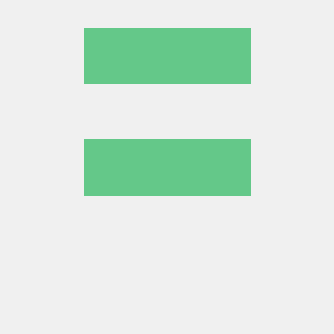

웹의 뼈대와 표정
의미 있는 문서 구조와
화면 크기에 맞는 레이아웃.
HELLO, WORLD. I'M ZERO.
작은 호기심을 동작하는 코드로.
Python에서 웹까지, 직접 만들며 성장하는 개발자입니다.
// 한 줄씩, 앞으로.const developer = { name: "Zero", learning: [ "Python", "Web development" ], mindset: "Build. Learn. Repeat."}; start(developer);01 / ABOUT ME
정답을 찾는 것만큼,
왜 동작하는지 알아가는 과정을 좋아합니다.

코디세이 학습 과정을 따라 Python으로 기초를 다지고, HTML·CSS·JavaScript로 웹의 동작 방식을 익히고 있습니다. 배운 내용을 작은 프로젝트로 연결하고 GitHub에 기록합니다.
지금 보고 있는 포트폴리오도 그 과정의 하나입니다. 버튼을 누르는 순간부터 화면이 바뀌기까지, 직접 코드를 작성하며 웹의 기본기를 쌓습니다.
02 / TOOLKIT
하나씩 이해하고,
직접 쓰면서 배웁니다.
의미 있는 문서 구조와
화면 크기에 맞는 레이아웃.
이벤트에서 상태로,
상태에서 화면의 변화로.
Python으로 익히는 기초와
GitHub에 남기는 학습 과정.
03 / PROJECTS
GitHub에서 가져온, 직접 만든 공개 저장소입니다.
프로젝트를 불러오는 중입니다.
GitHub API · 최신 업데이트 순 · Fork 저장소 제외
04 / CONTACT
프로젝트에 관한 생각이나
함께 배우고 싶은 주제가 있나요?
아래 폼은 입력 검증을 체험하는 공간입니다.
작성한 내용은 전송되거나 저장되지 않습니다.